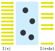
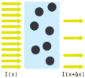
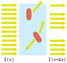

Optical Density
Objectives of this chapter are:
- Know the basics of absorbance and optical density (OD) measurements.
- Being able to obtain concentrations from OD measurements.
Composition of a liquid culture
One often needs to determine the concentration of cells and medium components with a volume. Depending on the biological or chemical species of interest there is a variety of measurement techniques available.
We will discuss two representative methods:
- Absorbance and Optical density (OD)
- Spectroscopy; in particular Raman spectroscopy
Both these techniques rely on the sample being exposed to a light source, and collecting information about the light being modulated by the sample.
A third technique that follows the same principle, but requires different computational processing and analysis methods is microscopy - with an own upcoming lecture devoted to this topic.
Absorbance
Let’s start with the perhaps simplest method to determine the concentration of bacteria in a liquid culture. In fact you will intuitively have used this method many times, perhaps in other contexts: simply look at it in a transparent container like a glass or flask.
This is not specific to bacteria and growth medium, but works with many suspensions (e.g., sand in water) or emulsions (e.g., milk in water): the higher the concentration of the dispersed substance, the more light is absorbed when shining light from one side and looking at it from the opposing side.
We can formulate the measurement setup as:
- A light beam (e.g., from an LED or laser) that is traversing a sample in a transparent cuvette.
- Measurement of light intensity received at the other side (e.g., by a photo diode) and comparison to the intensity received in presence of no sample.
- We expect the received light intensity to decrease with the concentration.
There are some limitations to this, though:
- When done in the lab for bacteria grown in, say LB medium, you may see by eye that the liquid becomes turbid, but this is not very precise. In more generality, it works better with something intransparent like sand than with something transparent like E. coli bacteria.
- It becomes darker, but there is also a color change that gives us more information that the pure absorbance: sandy water becomes brown and milky water white. If you see a white solution you would expect it contains more milk than sand; and the other way for a brown solution.
- It does not work for all dissolved substances. For example, we do not observe this with solutions like salty water, unless we add a lot of salt.
Optical Density
Let us assume the experimental setup of a cuvette of width \(w > 0\) filled with a sample that comprises of a transparent liquid and a suspended substance, say in concentration \(c \geq 0\). We will assume that the substance reduces or even blocks light through it, or alternatively, is transparent but refracts light.
We will shine light (more precisely, roughly parallel rays) with intensity \(I(0)\) from one side onto the cuvette and collect light \(I(w)\) on the opposing side.
We will next derive a central relation between \(c\) and the collected light \(I(d)\) which is known as the Beer–Lambert law:
Over a wide range of mid-level concentrations \(c\), it is \[ I(w)/I(0) = e^{-\gamma \cdot c \cdot w} \] for some \(\gamma > 0\).
We will prove the statement under a slightly restricted assumption that allows for a simpler proof, but conveys the key proof idea. In fact we will assume that \(c\) is such that roughly the same concentration of the substance is found in each small slice of the liquid. That excludes very low concentrations, say of bacteria, where some slices are expected to contain no bacteria.
In the following consider one such slice orthogonal to the light rays. We will identify the slice with its position \(x\) that is between \(0\) and the width of the cuvette \(w\). We assume that slices have a marginal thickness \(\Delta x > 0\) and, as previously noted, that the concentration is large enough and well mixed, so that all slices have the same concentration \(c\) of the suspended substance. A single slice is shown below.

Figure: Incoming light (yellow rays) is blocked by the suspended material (in black) in the transparent liquid (in blue).
Now assume we increase the concentration by a factor. In case this factor is not too high, we expect the amount of light to be blocked to increase by the same factor (for very high factors, particles will be behind each other, saturating the blocking). This is visualized as follows:

Figure: Incoming light is blocked by the suspended material with higher concentration.
We can phrase this as the the following relation between incoming and outgoing light intensities \[ I(x + \Delta x) \approx I(x) - \gamma \cdot c \cdot I(x) \cdot \Delta x \] where \(\gamma > 1\) is some proportionality constant that depends on the substance.
While (almost) transparent particles like E. coli do not block light, the same relation holds as long as they disperse incoming light into a another direction. E. coli are relatively complex bodies, so we can simply assume that they disperse light into a random direction, that is unlikely to be parallel to the incoming light. The concept is shown in the next figure:

Figure: Incoming light is refracted by the suspended transparent material like E. coli bacteria.
Letting the thickness of a slice \(\Delta x \to 0\), we obtain \[ dI(x) = - \gamma \cdot c \cdot I(x) \cdot dx \] or, in terms of a differential equation, \[ \frac{dI(x)}{dx} = - \gamma \cdot c \cdot I(x) \enspace. \]
Solving this ODE, see the background chapter on ODEs, yields \[ I(x) = I(0) \cdot e^{-\gamma \cdot c \cdot x} \] from the Beer–Lambert law.
The case of a non-transparent liquid
Many liquids, like LB medium, are not fully transparent and will also reduce \(I(x)\) even when \(c=0\). Model this by introducing a medium contribution with concentration \(c'\) and coefficient \(\gamma'\). Then for two contributors we get
\[ I(w) = I(0) \cdot e^{-(\gamma c + \gamma' c') w} \enspace. \]
This is the simple form of the Beer–Lambert relation when scattering/absorption scales linearly with concentration (within the linear range of the instrument).
Concentration Measurement via Optical Density
A spectrophotometer works by the above principles, and typically measures \(I(w)\) for a certain path length \(w\) at a certain wavelength \(\lambda\). Measured samples are from the mL range to droplets of 1-2 um in specialized devices. The former are often used for bacteria while the latter are used for purities of DNA concentrations.
The wavelength can often be selected on the device from a certain range. Since the measured intensity depends on the wavelength, the measured optical density is annotated with the wavelength as \(\text{OD}_\lambda\). For example, for E. coli often \(\text{OD}_{600}\) is used denoting a wavelength of 600 nm.
Since the liquid without the substance (\(c = 0\)) will already show certain absorbance (in the above formula we can see this by considering the liquid as a mix of say water and sand with water having a certain \(\gamma\) and sand another \(\gamma'\)) one typically first measures the pure liquid and then the liquid with the dissolved substance (a so called blank measurement).
Concretely, let us assume the following relation with \(\gamma\) for the substance like E. coli and \(\gamma'\) for the liquid, e.g., LB growth medium. \[ I(w) = I(0) \cdot e^{-(\gamma c + \gamma' c') w} \]
Many devices report absorbance (optical density) rather than raw intensity. For clarity we define the natural-log absorbance \[ A_{e}(w) = -\ln\left(\frac{I(w)}{I(0)}\right) \enspace. \]
Using the exponential model from above (with both analyte and medium), \[ I(w) = I(0) \cdot e^{-(\gamma c + \gamma' c') w} \enspace, \]
we obtain \[ A_{e}(w) = (\gamma c + \gamma' c') w \enspace. \]
Thus a blank measurement (medium only, \(c=0\)) gives \(A_{e}^{\mathrm{blk}} = \gamma' c' w\), and for a sample \(A_{\mathrm{ln}}^{\mathrm{m}} = (\gamma c + \gamma' c') w\). Subtracting the blank removes the medium contribution:
\[ A_{e}^{\mathrm{m}} - A_{e}^{\mathrm{blk}} = \gamma c w \enspace. \]
While we used \(A_{e}\) for simplicity above, devices typically report the optical density as \(A_{10}\), i.e., using \(\log_{10}\). The following relation holds: \(A_{10} = A_{e} / \ln(10)\).
Side note: We have assumed that the measurement device is aware of \(I(0)\) when computing \(A_{e}\). In fact, we could also drop this assumption and define \[ L_{e}(w) = -\ln\left( I(w) \right)\enspace. \] One verifies that, we still obtain \[ L_{e}^{\mathrm{m}} - L_{e}^{\mathrm{blk}} = \gamma c w \enspace. \]
The formula also hints at a potential problem in comparing OD values. We observe that the OD value is proportional to \(w\). Changing the device or the cuvette with a different \(w\) will thus result in different measurements. Also the \(\log(I(0))\) will be different between devices and must be considered for non-blanked values.
Some measurement setups use the dependence on \(w\) by measuring high concentrations. FOr example, assume that your device with a normal cuvette of \(w = 1\),cm would report an \(\text{OD}_{600}\) above \(4\) which is not supported by the device. By changing to a cuvette that has a thickness of \(w = 0.1\),cm we are expecting an OD divided by 10, which may very well be in the range of the measurement device and does not require to dilute the sample down before measuring it.
Some devices can measure a full spectrum, that is, report OD for a large range of wavelength with a single measurement.
We will next discuss a measurement method that also relies on spectra and we would like to remark that one can apply similar methods to those discussed next to the absorbance spectra.
Further literature
- Measuring bacteria in a microplate-reader: Stevenson, McVey, Clark, Swain, Pilizota (Sci Rep, 2016)
License: © 2025 Matthias Függer and Thomas Nowak. Licensed under CC BY-NC-SA 4.0.